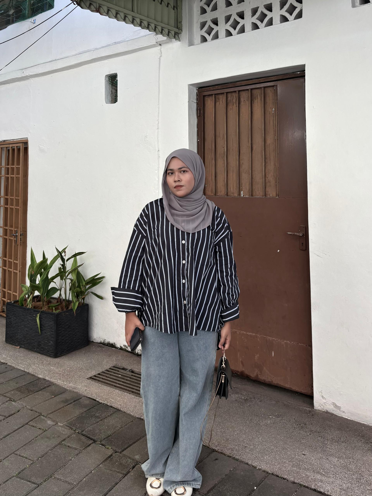
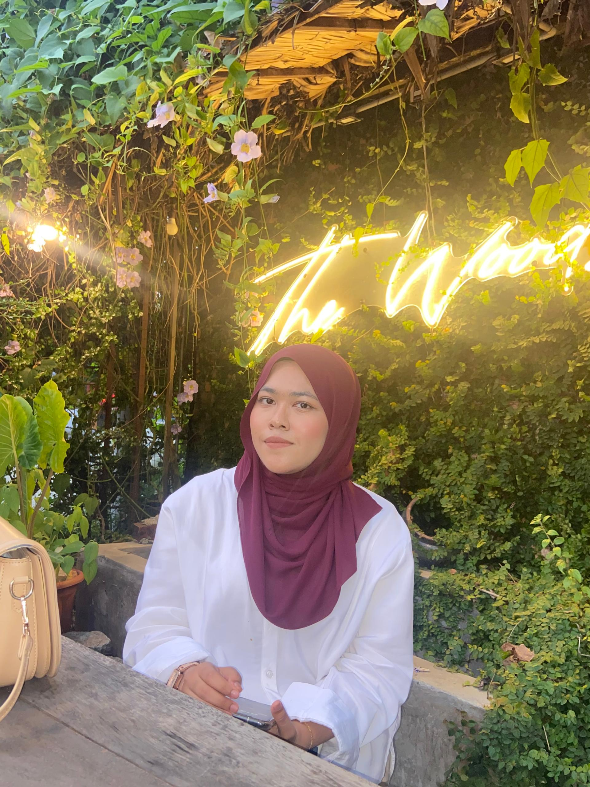

Welcome to my portfolio website.
Hi, I'm Nurin Natasya — someone who loves creativity, aesthetic and connecting with people. This page is a little glimpse of my world 🌈

Welcome to my portfolio website.
Hi, I'm Nurin Natasya — someone who loves creativity, aesthetic and connecting with people. This page is a little glimpse of my world 🌈

| PERSONAL DETAILS | |
|---|---|
| Name: | Nurin Natasya binti Shopiee |
| Address: | No. 2106 Pokok Machang, 13300 Tasek Gelugor, Pulau Pinang |
| Email: | nuriennatasyaa@gmail.com |
| Mobile Phone: | +60 11-17621801 |
| EDUCATION | |
|---|---|
| Primary School: | SK Pokok Sena |
| Secondary School: | SMK Pokok Sena |
| Diploma: | Diploma in Information Management (UiTM Kedah) |
| SKILLS | |
|---|---|
| Soft Skills | Communication, Teamwork, Creativity, Problem Solving |
| Software Skills | Canva, Microsoft Office, Photoshop, HTML & CSS |
Music has always been my escape. Whether it's Malay vibes, English hits, or deep galau songs, listening to music helps me relax, reflect, and feel connected to my emotions 🎶. Here are my favourite playlists by genre!
✨ My Curated Vibes ✨
🎵 English R&B
🔥 Trending R&B